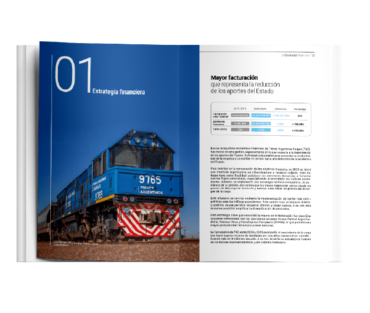
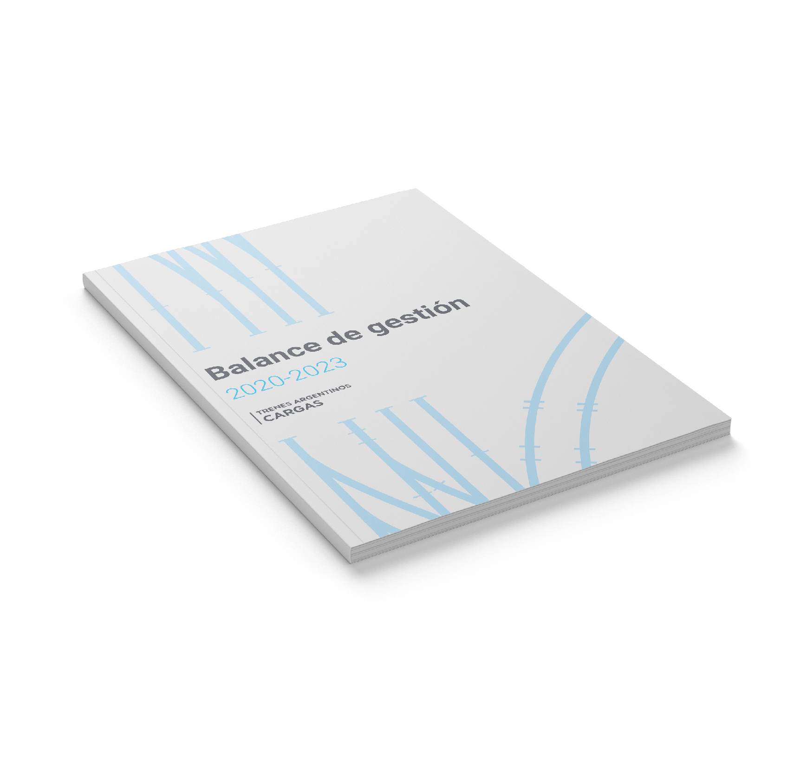
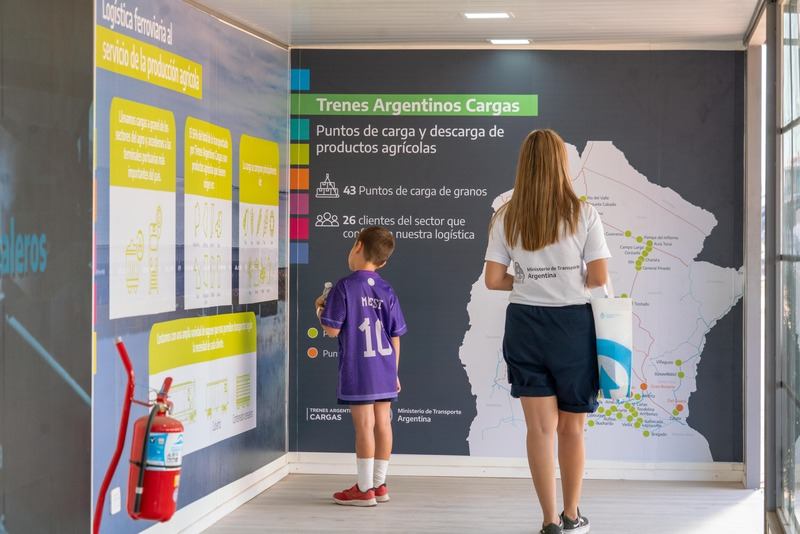

Trenes
Argentinos Cargas
// SISTEMATIZANDO LA LOGÍSTICA FEDERAL
NUESTRO ENFOQUE
Trenes Argentinos Cargas moviliza la producción del país sobre miles de kilómetros de vías. Ordenamos su sistema visual para estar a la altura de esa escala: una identidad clara y consistente que traduce el rendimiento operativo y la dimensión federal de la red, desde la señalética y el material rodante hasta la comunicación institucional y digital.




